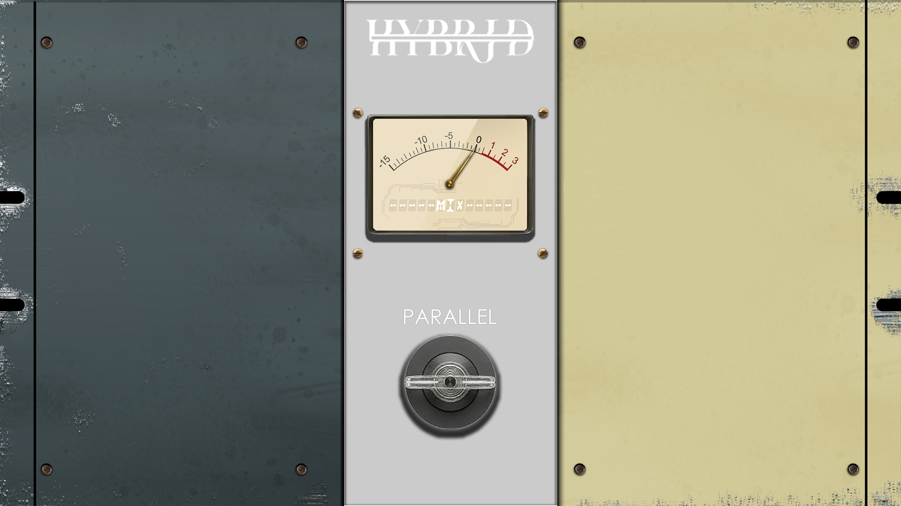

BKEQ Hybrid — 结合 SSL 与 Pultec 声音特点的均衡器

按下 S 键单独播放
Original
Processed
灵感 / Inspiration
在经历了一段时间的 Vibe "Learning" 之后，我决定做一款属于自己的插件。那么第一个插件要制作什么呢？想了很久，最后还是回到了最经典、也最常用的工具——EQ。
BK_EQ_Hybrid 的灵感，来自我最喜欢的两台传奇硬件：
它们并不"绝对精准"，但却能让声音变得好听。
特性 / Features
- 风格混搭 — 提供两种不同风格的混搭选择，并支持 SOLO 模式，可单纯当作 Pultec 或 SSL EQ 类模拟使用。
- 图形 UI — 操作界面直观，所见即所得。
- 开箱即用 — VST3 格式，无需繁琐安装。
- 完全免费 — 不绑定 iLok，无订阅。
下载 / Download
前往 Releases 页面 下载 VST3 格式即可。
使用 / Use
你需要一个 DAW（数字音频工作站）来作为载体使用。
- 推荐免费 DAW — Reaper
- 将
.vst3文件放入C:\Program Files\Common Files\VST3，DAW 会自动扫描并识别。
协议 / License
本项目仅供学习交流使用，请勿用于商业用途。
用到的字体文件（有修改）：
Protest · Matisse Pro EB
支持我 / Support Me
如果 BKEQ_Hybrid 恰好打动了你，或者你只是单纯喜欢这个奇怪的小 EQ，那么你可以考虑支持我。
💡 对这个插件感兴趣？欢迎 联系我。